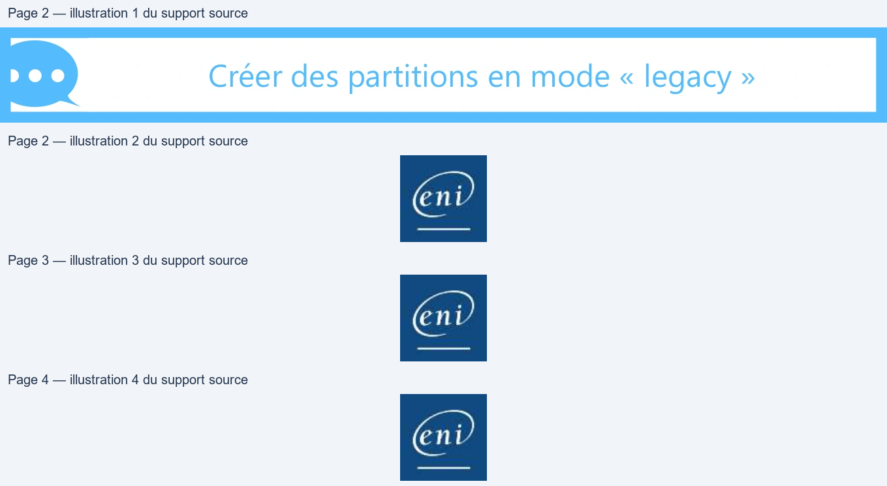
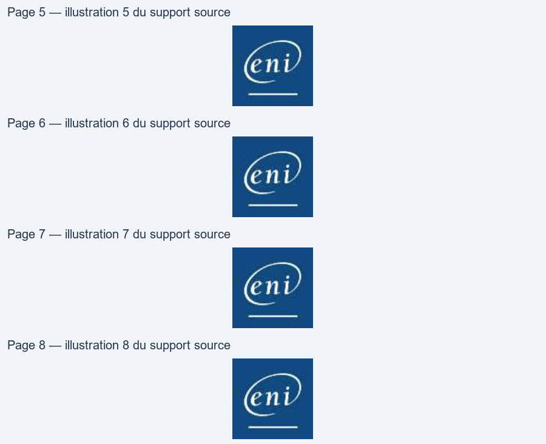
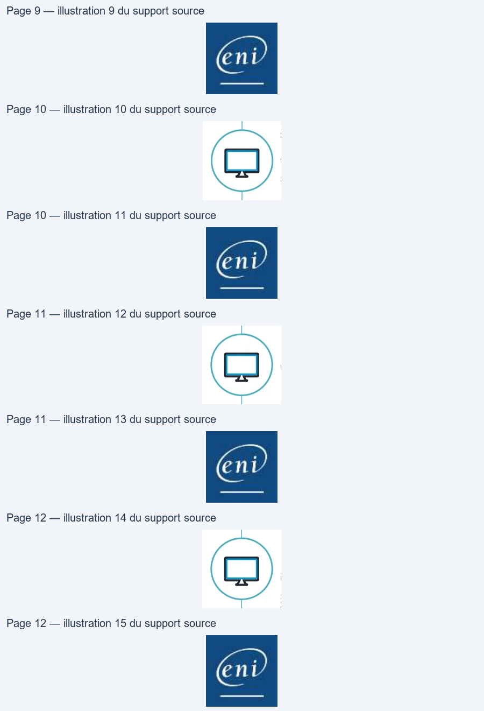
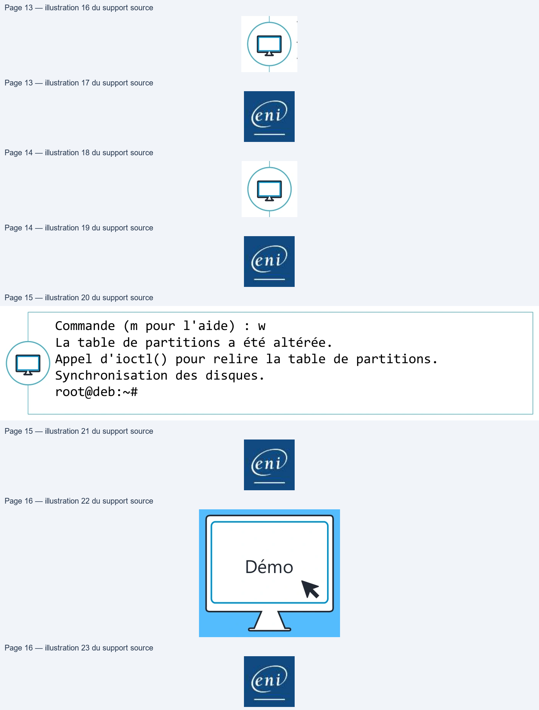
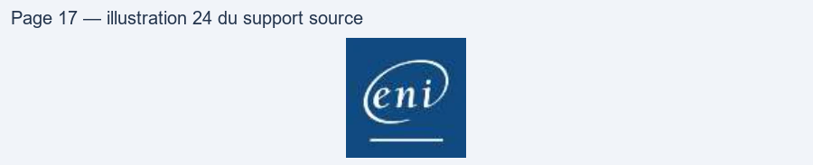

Transcription du document du Drive TSSR. La mise en forme est adaptée au Web ; les compléments IA du portail sont présentés séparément.
End
• Le boot loader : 446 premiers octets - Sous Linux il contient le stage 1 de
GRUB
• La table de partition : 64 octets, contient la position des 4 partitions
primaires
• La partition étendue pourra quant à elle stocker les informations
au maximum de 56 partitions logiques
• La plus grosse problématique du MBR est la taille limite des
partitions fixée au maximum à 2,2To (espace d'adressage de 32 bits)

• Le GPT (GUID Partition Table) est créé en 2013, il est le remplaçant
du MBR
• Le nombre maximum de partitions est fixé à 128 (voire 256)
• La limite théorique des partitions et des disques est de 9,4 Zo
(Zettaoctet)
• Sous Linux, les disques de type SCSI/SATA sont matérialisés dans le
répertoire /dev suivi de sd puis la lettre correspondant au disque
• Par exemple, s’il y a deux disques dans le système :
• /dev/sda correspond au premier disque détecté
• /dev/sdb correspond au deuxième disque
• Linux ne nomme pas les partitions à la suite
• Linux va réserver les chiffres de 1 à 4 pour les partitions principales
(principale et étendue)
• Quel que soit le nombre de partitions principales, s’il y a une
partition étendue alors les partitions logiques commenceront
quoiqu’il arrive à 5
• Exemple : le deuxième disque du système est partitionné avec 2
partitions principales et une partition étendue contenant 3
partitions logiques. Linux présentera tout cela de cette façon :

• fdisk [option] <peripherique de stockage>
• -l affiche la table de partition du périphérique
root@deb:~# fdisk -l /dev/sda
Disque /dev/sda : 20 GiB, 21474836480 octets, 41943040 secteurs Unités : secteur de 1 × 512 = 512 octets Taille de secteur (logique / physique) : 512 octets / 512 octets taille d'E/S (minimale / optimale) : 512 octets / 512 octets Type d'étiquette de disque : dos Identifiant de disque : 0x732e6aa1 Périphérique Amorçage Début Fin Secteurs Taille Id Type /dev/sda1 * 2048 499711 497664 243M 83 Linux /dev/sda2 501758 41940991 41439234 19,8G 5 Étendue
DO
ene
root@deb:~# fdisk /dev/sdb
Bienvenue dans fdisk (util-linux 2.29.2). Les modifications resteront en mémoire jusqu'à écriture. Soyez prudent avant d'utiliser la commande d'écriture.
Commande (m pour l'aide) : m [...] n ajouter une nouvelle partition p afficher la table de partitions t modifier le type d'une partition [...] w écrire la table sur le disque et quitter q quitter sans enregistrer les modifications
root@deb:~# fdisk /dev/sdb
Commande (m pour l'aide) : n
Type de partition
p primaire (0 primaire, 0 étendue, 4 libre)
e étendue (conteneur pour partitions logiques)
Sélectionnez (p par défaut) : p
Numéro de partition (1-4, 1 par défaut) :
Premier secteur (2048-62914559, 2048 par défaut) :
Dernier secteur, +secteurs ou +taille{K,M,G,T,P} (2048-62914559,
62914559 par défaut) : +20G

Commande (m pour l'aide) : p Disque /dev/sdb : 30 GiB, 32212254720 octets, 62914560 secteurs Unités : secteur de 1 × 512 = 512 octets Taille de secteur (logique / physique) : 512 octets / 512 octets taille d'E/S (minimale / optimale) : 512 octets / 512 octets Type d'étiquette de disque : dos Identifiant de disque : 0x0ab85bf5 Périphérique Amorçage Début Fin Secteurs Taille Id Type /dev/sdb1 2048 41945087 41943040 20G 83 Linux
=)
eni
Commande (m pour l'aide) : t Partition 1 sélectionnée Code Hexa (taper L pour afficher tous les codes) :L 0 Vide 24 NEC DOS 81 Minix / Linux a 1 FAT12 27 TFS WinRE masqu 82 partition d'éch 2 root XENIX 39 Plan 9 83 Linux 3 usr XENIX 3c récupération Pa 84 OS/2 cachée 4 FAT16 <32M 40 Venix 80286 85 Linux 5 Étendue 41 PPC PReP Boot 86 NTFS volume set 6 FAT16 42 SFS 87 NTFS volume set 7 HPFS/NTFS/exFAT 4d QNX4.x 88 Linux plaintext 8 AIX 4e 2e partie QNX4. 8e Linux LVM
Commande (m pour l'aide) : w La table de partitions a été altérée. Appel d'ioctl() pour relire la table de partitions. Synchronisation des disques. root@deb:~#
D
eni

